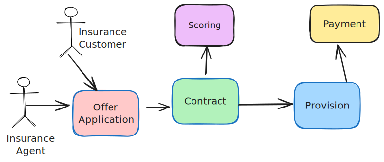

Problem statement
In distributes environments, business processes quite ofen span several systems. It is pretty normal that the involved systems are in ownership of serveral teams and even business divisions.
One pretty common design goal of distributed systems is, that they are decoupled from each other, to make independend development possible.
This often leads to a situation where Teams owning one system, does not even know other systems not being directly connected to them.
This is pretty nice in one way. But from a business perspective we often want often have question where answer need to look on the process holistically.
As it is often more easy to argue with one concrete example, let's have a look on it.

This example shows an insurance agent, that talked with an insucrance customer. He convinced the customer to accept an offer, that leads to an application.
The contract service perform some validations and checks the solvency with some external system. When everything turns out to be successfull. It policies the contract, meaning that it is now legally in a state, that the insurance is in place.
Whenever an contract ist being policied, the provision system is going to calculate the provsion to be payed out to the insurance agent.
In this example process we have already 4 different systems, being owend by 4 different teams.
In the real world such a process is being comprised of even more systems/teams.
Typical question that involves more than one team/system
The insurance agents want to know what happend to the offer/applications they goes back to them. They want to know if they got all the provisions.
The provision system first know of an application when the contract system policies a contract. It does not know of the offers that are in the state before this. Eg. if the application is in a state of a pending check with the scoring system, it could not know that there is an outstanding offer/application.
Possible solutions to this kind of questions
- Let all thoose systems have the needed information
This would mean in our example, that the provision system is having all the information of all relevant steps before. 1. Gather all process related information from all steps in a central system
https://www.youtube.com/watch?v=ItRopNk6avk
https://www.enterpriseintegrationpatterns.com/patterns/messaging/RoutingTable.html
https://event-driven.io/en/saga_process_manager_distributed_transactions/